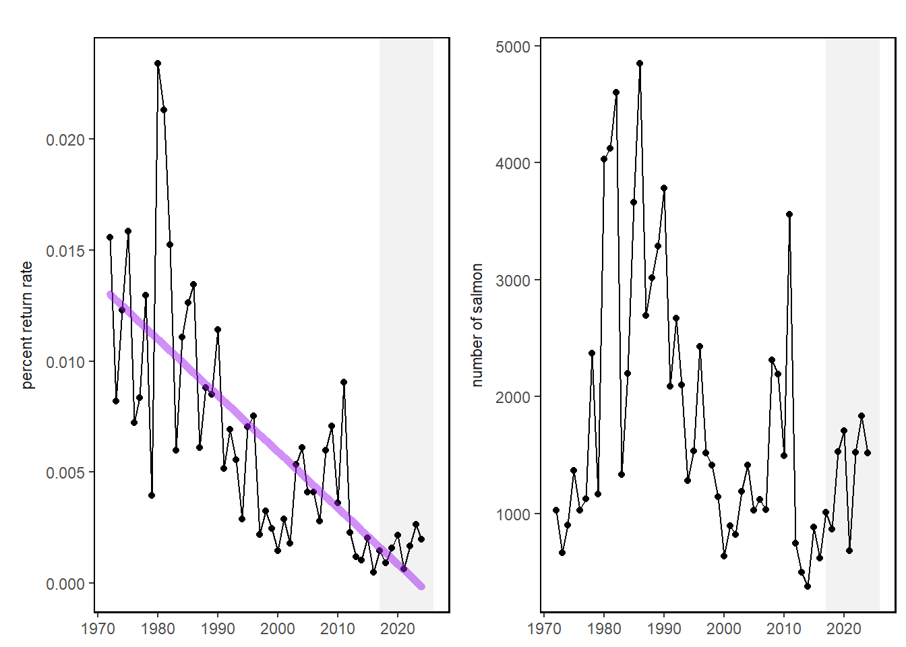

35 Gulf of Maine Atlantic salmon
Last updated July 23, 2026
Description: The data presented here are time series of documented Atlantic salmon returns to Gulf of Maine rivers since 1972 and return rates for two sea winter returns from hatchery smolt stocking in the Penobscot River during the same time frame.
Contributor(s): John Kocik, James Hawkes, Tim Sheehan. and Justin Stevens
Affiliations: NEFSC
Indicator Family:
Indicator Category:
Synthesis Theme:
35.1 Introduction to Indicator
U.S. Atlantic salmon historically ranged as far south as Long Island Sound but current populations are restricted to Maine. Populations south of Maine were extirpated in the 1800’s. The Gulf of Maine Atlantic Salmon Distinct Population Segment (GOM DPS) supported local commercial fisheries until a 1947 closure. Populations remained low (< 500) until the modern hatchery restoration programs started in the late 1960’s. Comprehensive monitoring started in 1972 and a key salmon indicator is estimated adult returns to monitored rivers of the Gulf of Maine. Stocking led to relatively rapid population rebuilding. However, a significant and persistent decrease in marine productivity of North American Atlantic salmon populations occurred around 1990, which impacted U.S. adult spawner abundance. Adult salmon typically return to freshwater to spawn after two winters at sea (2SW) with higher return rates than those spending one winter at sea (1SW) or longer. Most 2SW spawners are female hatchery-origin fish, making their return rate a crucial indicator of marine productivity. Return rates are calculated from known smolt stocking numbers and locations with adjustments for freshwater losses and counts of returning hatchery adults to the Penobscot River [60]. Together, abundance and return rates are key indicators of population status and marine productivity.
35.2 Key Results and Visualizations
A significant and persistent decrease in marine productivity of North American Atlantic salmon populations occurred around 1990, which impacted U.S. adult spawner abundance. Since the GOM DPS was listed as Endangered under the ESA in 2000, primary threats remain marine survival, climate change, and dams. Abundance remains critically low and hatchery fish are the primary population component as indicated by adult counts at traps in large rivers and redd surveys in smaller coastal drainages (USASAC 2025). Atlantic salmon adult returns in 2024 were estimated at 1,517 with 91% of adults originating from hatchery supplementation and 86% returning to the Penobscot River from smolt stocking. Abundance remains critically low relative to recovery targets of 6,000 naturally-reared returns with only an estimated 131 natural returns. Return rate of Penobscot River hatchery origin 2SW salmon was 0.20%. While this rate is comparable to the decade average (0.16%), return rates are significantly lower than rates needed to meet recovery targets. Compared to metrics from 1970 to 1990, the last decade is less than 20% of that time period.
Mid-Atlantic

35.3 Implications
Decreased productivity linked to a regime shift resulted in a cascading effect of ecosystem conditions driven by large-scale oceanic changes. These large-scale changes have impacted temperature, current patterns, and primary and secondary production dynamics throughout the Northwest Atlantic range of Atlantic salmon. Changes impacted the forage base overall and especially capelin where distribution, abundance, size and energy density changed rapidly. Although many ecosystem conditions in the Northwest Atlantic have reverted back to their pre-1990 conditions, a corresponding increase in U.S. Atlantic salmon marine productivity has not been noted. While abundance is relatively steady, it is at critically low levels and highly dependent upon conservation hatchery production levels.
35.4 Indicator statistics
Spatial scale: EPU = Gulf of Maine
Temporal scale: Annually 1972-2024
Variable definitions
35.5 Get the data
Point of contact: Jon Kocik (john.kocik@noaa.gov); James Hawkes (james.hawkes@noaa.gov)
ecodata dataset: ecodata::gom_salmon
Tech Doc link: https://noaa-edab.github.io/tech-doc/gom_salmon.html